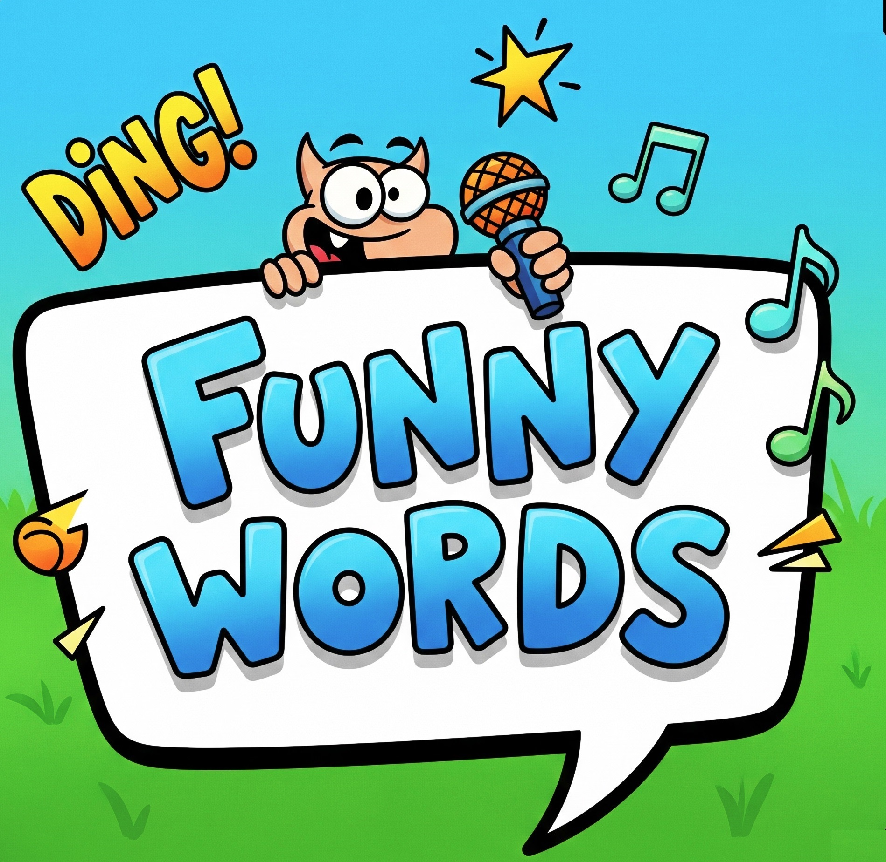

<!DOCTYPE html>
<html lang="en">
<head>
    <meta charset="UTF-8">
    <meta name="viewport" content="width=device-width, initial-scale=1.0">
    <title>Funny Words Quiz</title>
    <script src="https://cdn.tailwindcss.com"></script>
    <style>
        @import url('https://fonts.googleapis.com/css2?family=Inter:wght@400;700;800;900&display=swap');
        body {
            font-family: 'Inter', sans-serif;
            background-color: #FDF2F8; /* A light pink/purple for a bubblegum feel */
        }
        .correct-answer-feedback {
            background-color: #10B981; /* Standard green for correct */
        }
        .incorrect-answer-feedback {
            background-color: #EF4444; /* Standard red for incorrect */
        }
        .vibrant-pink-bg {
            background-color: #E879F9; /* Fuchsia-400 */
        }
        .vibrant-purple-text {
            color: #6B21A8; /* Purple-900 */
        }
        .vibrant-teal-bg {
            background-color: #22D3EE; /* Cyan-400 */
        }
        .vibrant-teal-bg:hover {
            background-color: #06B6D4; /* Cyan-600 */
        }
    </style>
</head>
<body class="flex flex-col min-h-screen">
    <div id="app-container" class="flex-grow flex items-center justify-center p-4 sm:p-6">
        <!-- Content will be rendered here by JavaScript -->
    </div>

    <!-- Persistent Footer -->
    <footer class="p-4 text-center text-gray-500 text-sm italic">
        ✨✍️ Devised by Panagiotis Domvros, English and Drama Teacher, All Rights Reserved ✍️✨
    </footer>

    <script>
        // The complete list of 50 words with their correct and incorrect usage
        const words = [
            { word: "Argle-bargle", origin: "🇺🇸", definition: "A lot of meaningless talk or writing.", correct: "The politician's speech was full of argle-bargle and didn't address the real issues.", incorrect: [ "We enjoyed the argle-bargle of the classical concert.", "She used the argle-bargle to fix the broken sink.", "The argle-bargle of the forest was very peaceful." ] },
            { word: "Kerfuffle", origin: "🇬🇧", definition: "A commotion or fuss, especially one caused by conflicting views.", correct: "There was a bit of a kerfuffle in the pub when the football match ended.", incorrect: [ "I had a delicious kerfuffle for dinner last night.", "The baby's kerfuffle was so soft and fluffy.", "He used a kerfuffle to clean the windows." ] },
            { word: "Tippet", origin: "🇬🇧", definition: "A long, scarf-like cape or stole worn by women.", correct: "She wore a beautiful embroidered tippet to the fancy-dress party.", incorrect: [ "The tippet of the knife was extremely sharp.", "We watched the tippet of the boat sail across the sea.", "He installed a tippet to hold the curtain rod." ] },
            { word: "Borborygmus", origin: "🇺🇸", definition: "The rumbling sound made by gas in the intestines.", correct: "After skipping lunch, my stomach's borborygmus was so loud everyone could hear it.", incorrect: [ "The old car's engine made a loud borborygmus.", "She loved the borborygmus of the city at night.", "The scientist studied the borborygmus of the galaxy." ] },
            { word: "Flummery", origin: "🇬🇧", definition: "Empty compliments or promises; nonsense.", correct: "He promised a tax cut, but it was just flummery to get our votes.", incorrect: [ "We made a delicious flummery with milk and sugar.", "He used the flummery to clean the stain on the floor.", "The knight's flummery was polished and shiny." ] },
            { word: "Gobsmacked", origin: "🇬🇧", definition: "Utterly astonished; astounded.", correct: "I was absolutely gobsmacked when I found out I'd won the lottery.", incorrect: [ "He was gobsmacked by the terrible taste of the soup.", "She felt gobsmacked from running a marathon.", "The dog looked gobsmacked after chasing the ball." ] },
            { word: "Zonked", origin: "🇺🇸", definition: "Exhausted, or under the influence of drugs or alcohol.", correct: "After a 12-hour shift, I was completely zonked and fell asleep on the couch.", incorrect: [ "The computer was zonked, so I couldn't use it.", "He zonked the nail with a hammer to secure it.", "The zonked sound of the bell echoed through the valley." ] },
            { word: "Widdershins", origin: "🇬🇧", definition: "In a direction contrary to the sun's course; counterclockwise.", correct: "The old clock ran widdershins, with the hands spinning counterclockwise.", incorrect: [ "He walked widdershins to the train station.", "The artist painted a widdershins with vibrant colors.", "We planted the widdershins in the garden last spring." ] },
            { word: "Lollygag", origin: "🇺🇸", definition: "To waste time by loitering or dawdling.", correct: "Stop lollygagging and finish your chores!", incorrect: [ "We watched the baby lollygag in its crib.", "He used a lollygag to stir the hot chocolate.", "The lollygag of the wind was a gentle breeze." ] },
            { word: "Codswallop", origin: "🇬🇧", definition: "Nonsense; rubbish.", correct: "Don't listen to a word he says; it's all a load of codswallop.", incorrect: [ "We ate codswallop and chips for dinner.", "The fisherman caught a large codswallop in his net.", "He used the codswallop to build a small shelter." ] },
            { word: "Discombobulate", origin: "🇺🇸", definition: "To confuse or disconcert someone.", correct: "The complex instructions for the assembly discombobulated me completely.", incorrect: [ "The chef used the spice to discombobulate the stew.", "He tried to discombobulate the car's engine.", "They went on a long hike to discombobulate." ] },
            { word: "Snookered", origin: "🇬🇧", definition: "To be in a difficult position from which escape is unlikely.", correct: "I was snookered in the chess game; there was no way I could win.", incorrect: [ "He snookered the winning goal in the final seconds.", "The baby snookered for its mother's attention.", "The snookered smell of the flowers filled the room." ] },
            { word: "Balderdash", origin: "🇬🇧", definition: "Senseless talk or writing; nonsense.", correct: "His story about seeing a UFO was pure balderdash.", incorrect: [ "She used a balderdash to protect her head from the rain.", "The balderdash of the door made a loud creaking sound.", "He polished the balderdash until it shined." ] },
            { word: "Skedaddle", origin: "🇺🇸", definition: "To run away in a hurry.", correct: "When the police arrived, the kids skedaddled down the street.", incorrect: [ "He wanted to skedaddle the water from the bucket.", "The cook used a skedaddle to whip the cream.", "The skedaddle of the clock marked the passage of time." ] },
            { word: "Scofflaw", origin: "🇺🇸", definition: "A person who flouts the law, especially traffic laws, with impunity.", correct: "He was a notorious scofflaw, always getting parking tickets.", incorrect: [ "The scofflaw of the ship was the captain's hat.", "I used a scofflaw to get the dust off the shelf.", "The chef made a delicious scofflaw with potatoes and cheese." ] },
            { word: "Naff", origin: "🇬🇧", definition: "Lacking taste or style; vulgar.", correct: "That shiny suit is a bit naff, isn't it?", incorrect: [ "The naff sound of the door closing was very loud.", "The naff of the ship's mast was broken.", "He used a naff to clean the mud off his shoes." ] },
            { word: "Cack-handed", origin: "🇬🇧", definition: "Clumsy or awkward, especially in using one's hands.", correct: "I'm completely cack-handed when it comes to any sort of DIY.", incorrect: [ "The cack-handed of the eagle was a majestic sight.", "The chef cack-handed the spices into the pot.", "The cack-handed of the bell was very loud." ] },
            { word: "Malarkey", origin: "🇺🇸", definition: "Nonsense; meaningless talk.", correct: "Quit all that malarkey and tell me what really happened.", incorrect: [ "We went on a long hike to see the malarkey of the mountain.", "The malarkey of the car was very loud.", "He used a malarkey to stir the paint." ] },
            { word: "Gubbins", origin: "🇬🇧", definition: "Miscellaneous articles, odds and ends.", correct: "I need to organize all the gubbins in my workshop.", incorrect: [ "He gubbins a beautiful statue out of clay.", "We ate gubbins for dinner, they were delicious.", "The gubbins of the tree was very old." ] },
            { word: "Tosh", origin: "🇬🇧", definition: "Nonsense, rubbish.", correct: "The movie was pure tosh, with a ridiculous plot and terrible acting.", incorrect: [ "The tosh of the bell rang through the town.", "He used a tosh to clean the floor.", "The tosh of the river was very fast." ] },
            { word: "Donnybrook", origin: "🇺🇸", definition: "A scene of uproar and disorder; a free-for-all brawl.", correct: "A donnybrook broke out at the bar after someone spilled a drink.", incorrect: [ "She found a beautiful donnybrook in the garden.", "The donnybrook of the river was very calm.", "The artist painted a beautiful donnybrook." ] },
            { word: "Palaver", origin: "🇬🇧", definition: "A long and tedious fuss or discussion.", correct: "The long palaver about the seating arrangements was so boring.", incorrect: [ "He used a palaver to cook the food.", "The palaver of the ocean was very loud.", "The palaver of the bird was a beautiful song." ] },
            { word: "Doohickey", origin: "🇺🇸", definition: "A gadget or device whose name is not known or has been forgotten.", correct: "Can you hand me that doohickey for the car engine?", incorrect: [ "The chef made a delicious doohickey with chocolate.", "He used a doohickey to draw a straight line.", "The doohickey of the mountain was covered in snow." ] },
            { word: "Bamboozle", origin: "🇺🇸", definition: "To fool or cheat someone.", correct: "The con artist tried to bamboozle the old woman out of her savings.", incorrect: [ "The chef bamboozle the chicken with a special sauce.", "The bamboozle of the wind was very strong.", "He bamboozle a beautiful painting on the wall." ] },
            { word: "Faff", origin: "🇬🇧", definition: "To spend time in ineffectual activity; to fuss.", correct: "I spent all morning faffing about instead of getting any real work done.", incorrect: [ "He faff a beautiful song on the guitar.", "The faff of the door was very loud.", "The faff of the river was very calm." ] },
            { word: "Jiggery-pokery", origin: "🇬🇧", definition: "Deceitful or dishonest behavior.", correct: "The company was investigated for financial jiggery-pokery.", incorrect: [ "We went on a long hike to see the jiggery-pokery of the forest.", "The jiggery-pokery of the bells was very loud.", "The jiggery-pokery of the car was very fast." ] },
            { word: "Absquatulate", origin: "🇺🇸", definition: "To leave abruptly.", correct: "The cat absquatulated through the open window before I could catch it.", incorrect: [ "He used an absquatulate to clean the dirty floor.", "The absquatulate of the bird was a beautiful sight.", "The absquatulate of the music was very calming." ] },
            { word: "Pangram", origin: "🇺🇸", definition: "A sentence that contains every letter of the alphabet.", correct: "The sentence 'The quick brown fox jumps over the lazy dog' is a well-known pangram.", incorrect: [ "The artist painted a beautiful pangram of the sunset.", "The chef made a delicious pangram with fresh vegetables.", "The pangram of the boat was very large." ] },
            { word: "Chunder", origin: "🇬🇧", definition: "To vomit.", correct: "He had too much to drink and chundered all over the pavement.", incorrect: [ "He used a chunder to cut the rope.", "The chunder of the car was very loud.", "The chunder of the bell rang through the town." ] },
            { word: "Hootenanny", origin: "🇺🇸", definition: "An informal gathering with folk music and dancing.", correct: "We had a hootenanny in the barn, with banjos and guitars.", incorrect: [ "The hootenanny of the owl was very loud.", "The hootenanny of the ship was very large.", "He used a hootenanny to clean the floor." ] },
            { word: "Ballyhoo", origin: "🇺🇸", definition: "Extravagant publicity or fuss.", correct: "The new product release was surrounded by months of media ballyhoo.", incorrect: [ "The ballyhoo of the boat was a beautiful sight.", "He made a ballyhoo with wood and metal.", "The ballyhoo of the lion was very loud." ] },
            { word: "Poppycock", origin: "🇺🇸", definition: "Nonsense, rubbish.", correct: "His suggestion that the earth is flat is utter poppycock.", incorrect: [ "The poppycock of the flowers was a beautiful scent.", "He used a poppycock to stir the soup.", "The poppycock of the bell was very loud." ] },
            { word: "Flummox", origin: "🇬🇧", definition: "To bewilder; to confuse.", correct: "The tricky question on the test flummoxed all the students.", incorrect: [ "The flummox of the river was very fast.", "He used a flummox to clean the dirty floor.", "The flummox of the music was very calming." ] },
            { word: "Thingummyjig", origin: "🇬🇧", definition: "A thing whose name one cannot recall.", correct: "What's that thingummyjig you use to open jars?", incorrect: [ "The thingummyjig of the dog was very loud.", "The chef made a thingummyjig with fresh vegetables.", "The thingummyjig of the car was very fast." ] },
            { word: "Wazzock", origin: "🇬🇧", definition: "A stupid or annoying person.", correct: "That driver is a complete wazzock for cutting me off like that.", incorrect: [ "The wazzock of the forest was very quiet.", "He used a wazzock to stir the soup.", "The wazzock of the bell was very loud." ] },
            { word: "Blatherskite", origin: "🇺🇸", definition: "A person who talks at great length without making much sense.", correct: "My uncle is a blatherskite who can't stop talking about his fishing trips.", incorrect: [ "The blatherskite of the bird was a beautiful song.", "The blatherskite of the car was very fast.", "He used a blatherskite to clean the windows." ] },
            { word: "Tump", origin: "🇺🇸", definition: "A small hill or mound. (Often used in the southern U.S.)", correct: "We sat on the grassy tump to watch the sunset.", incorrect: [ "The tump of the ocean was very loud.", "He used a tump to cut the rope.", "The tump of the music was very calming." ] },
            { word: "Ragamuffin", origin: "🇬🇧", definition: "A person, typically a child, in ragged, dirty clothes.", correct: "A group of ragamuffin children played barefoot in the street.", incorrect: [ "He made a ragamuffin out of wood and metal.", "The ragamuffin of the car was very fast.", "The ragamuffin of the bells was very loud." ] },
            { word: "Plonk", origin: "🇬🇧", definition: "A cheap or inferior wine.", correct: "We drank a bottle of cheap plonk at the student party.", incorrect: [ "The plonk of the rock hitting the water was very loud.", "He used a plonk to clean the floor.", "The plonk of the car was very fast." ] },
            { word: "Hoosegow", origin: "🇺🇸", definition: "A jail or lockup.", correct: "He ended up in the hoosegow after disturbing the peace.", incorrect: [ "The chef made a delicious hoosegow with fresh vegetables.", "The hoosegow of the mountain was covered in snow.", "He used a hoosegow to stir the soup." ] },
            { word: "Shenanigans", origin: "🇺🇸", definition: "Playful mischief or high-spirited behavior.", correct: "The boys were up to their usual shenanigans, hiding my keys and hat.", incorrect: [ "We went on a long hike to see the shenanigans of the forest.", "The shenanigans of the bells was very loud.", "The shenanigans of the car was very fast." ] },
            { word: "Gormless", origin: "🇬🇧", definition: "Lacking intelligence and common sense; foolish.", correct: "He just stared at me with a gormless expression, not understanding a word I said.", incorrect: [ "The gormless of the bird was a beautiful song.", "The gormless of the car was very fast.", "He used a gormless to clean the windows." ] },
            { word: "Kerplunk", origin: "🇺🇸", definition: "The sound of something falling into water.", correct: "The ball fell into the well with a splash and a kerplunk.", incorrect: [ "He used a kerplunk to cut the rope.", "The kerplunk of the music was very calming.", "The kerplunk of the bell was very loud." ] },
            { word: "Gumption", origin: "🇺🇸", definition: "Astute common sense; initiative.", correct: "It takes a lot of gumption to start your own business.", incorrect: [ "The gumption of the ocean was very loud.", "He made a gumption out of wood and metal.", "The gumption of the bell rang through the town." ] },
            { word: "Claptrap", origin: "🇬🇧", definition: "Absurd or nonsensical talk or ideas.", correct: "I'm tired of listening to all that political claptrap on the news.", incorrect: [ "The claptrap of the car was very loud.", "The claptrap of the bell was very loud.", "He used a claptrap to clean the floor." ] },
            { word: "Mizzle", origin: "🇬🇧", definition: "A fine, light rain or drizzle.", correct: "It was just a light mizzle, so we didn't need our umbrellas.", incorrect: [ "He used a mizzle to mix the cement.", "The mizzle of the boat was very large.", "The mizzle of the bells was very loud." ] },
            { word: "Chuffed", origin: "🇬🇧", definition: "Pleased and proud about something.", correct: "She was absolutely chuffed to bits with her new car.", incorrect: [ "The chuffed of the train was very loud.", "The chuffed of the cat was very soft.", "He used a chuffed to cut the rope." ] },
            { word: "Hullabaloo", origin: "🇺🇸", definition: "A noisy commotion or fuss.", correct: "There was a huge hullabaloo when the rock star arrived at the airport.", incorrect: [ "The hullabaloo of the mountain was covered in snow.", "He used a hullabaloo to stir the soup.", "The hullabaloo of the bells was very loud." ] },
            { word: "Skiving", origin: "🇬🇧", definition: "The act of avoiding work or a duty by staying away or leaving early.", correct: "He's been skiving off work all week, pretending to be sick.", incorrect: [ "The skiving of the train was very loud.", "The skiving of the bell was very loud.", "He used a skiving to clean the floor." ] },
            { word: "Hornswoggle", origin: "🇺🇸", definition: "To swindle, cheat, or deceive someone.", correct: "He tried to hornswoggle me into buying a fake antique.", incorrect: [ "The hornswoggle of the bird was a beautiful song.", "The hornswoggle of the mountain was very tall.", "He used a hornswoggle to cut the rope." ] },
        ];

        // Utility function to shuffle an array
        const shuffleArray = (array) => {
            const newArray = [...array];
            for (let i = newArray.length - 1; i > 0; i--) {
                const j = Math.floor(Math.random() * (i + 1));
                [newArray[i], newArray[j]] = [newArray[j], newArray[i]];
            }
            return newArray;
        };

        let currentScreen;
        let score = 0;
        let currentWordIndex = 0;
        let shuffledWords = [];
        let feedbackTimeout;
        const appContainer = document.getElementById('app-container');

        // Render the welcome screen
        const renderWelcomeScreen = () => {
            appContainer.innerHTML = `
                <div class="text-center p-4 sm:p-6 w-full max-w-2xl">
                    <h1 class="text-4xl md:text-5xl font-extrabold vibrant-purple-text mb-4 sm:mb-6">
                        Funny Words Quiz
                    </h1>
                    <p class="text-lg text-gray-600 mb-2">
                        Ready to test your knowledge of wonderfully strange words?
                    </p>
                    <p class="text-gray-500 text-sm italic mb-4 sm:mb-6">
                        Devised by Panagiotis Domvros, English and Drama Teacher
                    </p>
                    
                    <button id="start-button"
                        class="vibrant-pink-bg hover:bg-fuchsia-600 text-white font-bold py-3 px-8 rounded-full shadow-lg transition-transform transform hover:scale-105 text-lg">
                        Continue
                    </button>
                </div>
            `;
            document.getElementById('start-button').addEventListener('click', renderInstructionsScreen);
        };

        // Render the new instructions screen
        const renderInstructionsScreen = () => {
            appContainer.innerHTML = `
                <div class="text-center p-4 sm:p-6 w-full max-w-2xl">
                    <h1 class="text-4xl md:text-5xl font-extrabold vibrant-purple-text mb-4 sm:mb-6">
                        How to Play
                    </h1>
                    <div class="bg-white p-6 sm:p-8 rounded-2xl shadow-lg border-2 border-fuchsia-200 mb-6 text-left space-y-4">
                        <p class="text-gray-700 text-base sm:text-lg">
                            You'll be presented with a <strong>funny word</strong> and its <strong>definition</strong>.
                        </p>
                        <p class="text-gray-700 text-base sm:text-lg">
                            Your task is to select the correct sentence from the four options provided.
                        </p>
                        <p class="text-gray-700 text-base sm:text-lg">
                            Choose wisely! You'll get immediate feedback on your answer.
                        </p>
                        <p class="text-gray-700 text-base sm:text-lg">
                            The quiz consists of all 50 words. Good luck!
                        </p>
                    </div>
                    <button id="begin-quiz-button"
                        class="vibrant-teal-bg hover:bg-cyan-600 text-white font-bold py-3 px-8 rounded-full shadow-lg transition-transform transform hover:scale-105 text-lg">
                        Begin Quiz
                    </button>
                </div>
            `;
            document.getElementById('begin-quiz-button').addEventListener('click', startGame);
        };

        // Render the game screen
        const renderGameScreen = () => {
            if (currentWordIndex >= shuffledWords.length) {
                renderResultsScreen();
                return;
            }

            const wordData = shuffledWords[currentWordIndex];
            const allOptions = shuffleArray([
                wordData.correct,
                ...wordData.incorrect.slice(0, 3)
            ]);

            const optionsHtml = allOptions.map((sentence, index) => `
                <button data-sentence="${sentence}"
                    class="w-full text-left p-4 sm:p-5 bg-gray-50 hover:bg-fuchsia-100 rounded-lg border border-gray-200 shadow-sm transition-colors cursor-pointer text-sm sm:text-base">
                    <p class="text-gray-800">${sentence}</p>
                </button>
            `).join('');

            appContainer.innerHTML = `
                <div class="w-full max-w-2xl space-y-4 sm:space-y-6">
                    <div class="flex justify-between items-center text-gray-500 text-sm sm:text-base">
                        <span class="font-semibold">Score: ${score}</span>
                        <span class="font-semibold">Question ${currentWordIndex + 1} of ${shuffledWords.length}</span>
                    </div>

                    <div class="bg-fuchsia-100 p-4 sm:p-6 rounded-xl border-2 border-fuchsia-200">
                        <h2 class="text-2xl sm:text-3xl font-bold vibrant-purple-text flex items-center mb-2">
                            ${wordData.word} <span class="ml-2 text-xl sm:text-2xl">${wordData.origin}</span>
                        </h2>
                        <p class="text-base sm:text-lg text-fuchsia-600 italic">"${wordData.definition}"</p>
                    </div>

                    <div id="options-container" class="space-y-3 sm:space-y-4">
                        ${optionsHtml}
                    </div>

                    <div id="feedback" class="p-4 rounded-xl text-white font-semibold flex items-center shadow-md transition-all duration-500 ease-in-out transform scale-0 opacity-0 text-sm sm:text-base">
                        <!-- Feedback message will appear here -->
                    </div>
                </div>
            `;

            // Attach event listeners to the newly created buttons
            document.querySelectorAll('#options-container button').forEach(button => {
                button.addEventListener('click', () => handleOptionClick(button));
            });
        };

        // Render the results screen
        const renderResultsScreen = () => {
            appContainer.innerHTML = `
                <div class="text-center p-4 sm:p-6 w-full max-w-2xl">
                    <h1 class="text-4xl md:text-5xl font-extrabold vibrant-purple-text mb-4 sm:mb-6">Quiz Complete!</h1>
                    <p class="text-xl sm:text-2xl text-gray-800 mb-2">
                        Your final score is:
                    </p>
                    <div class="text-6xl md:text-7xl font-black vibrant-purple-text mb-8">
                        ${score} / ${shuffledWords.length}
                    </div>
                    <button id="play-again-button"
                        class="vibrant-teal-bg hover:bg-cyan-600 text-white font-bold py-3 px-8 rounded-full shadow-lg transition-transform transform hover:scale-105 text-lg">
                        Play Again
                    </button>
                </div>
            `;
            document.getElementById('play-again-button').addEventListener('click', renderWelcomeScreen);
        };

        const handleOptionClick = (button) => {
            const selectedSentence = button.dataset.sentence;
            const wordData = shuffledWords[currentWordIndex];
            const isCorrect = selectedSentence === wordData.correct;
            const feedbackElement = document.getElementById('feedback');
            const optionsContainer = document.getElementById('options-container');

            // Disable all buttons to prevent multiple clicks
            optionsContainer.querySelectorAll('button').forEach(btn => btn.disabled = true);

            clearTimeout(feedbackTimeout);

            if (isCorrect) {
                score++;
                feedbackElement.classList.add('correct-answer-feedback');
                feedbackElement.innerHTML = `
                    <svg xmlns="http://www.w3.org/2000/svg" width="24" height="24" viewBox="0 0 24 24" fill="none" stroke="currentColor" stroke-width="2" stroke-linecap="round" stroke-linejoin="round" class="lucide lucide-check-circle mr-2"><path d="M22 11.08V12a10 10 0 1 1-5.93-8.8" /><path d="M22 4 12 14.01l-3-3" /></svg>
                    Correct! Great job!
                `;
            } else {
                feedbackElement.classList.add('incorrect-answer-feedback');
                feedbackElement.innerHTML = `
                    <svg xmlns="http://www.w3.org/2000/svg" width="24" height="24" viewBox="0 0 24 24" fill="none" stroke="currentColor" stroke-width="2" stroke-linecap="round" stroke-linejoin="round" class="lucide lucide-x-circle mr-2"><circle cx="12" cy="12" r="10" /><path d="m15 9-6 6" /><path d="m9 9 6 6" /></svg>
                    Incorrect. The correct answer was: ${wordData.correct}
                `;
            }

            feedbackElement.classList.remove('scale-0', 'opacity-0');
            feedbackElement.classList.add('scale-100', 'opacity-100');

            // Move to the next word after a delay
            feedbackTimeout = setTimeout(() => {
                feedbackElement.classList.remove('scale-100', 'opacity-100');
                feedbackElement.classList.add('scale-0', 'opacity-0');
                currentWordIndex++;
                renderGameScreen();
            }, 2500);
        };

        const startGame = () => {
            score = 0;
            currentWordIndex = 0;
            shuffledWords = shuffleArray(words);
            renderGameScreen();
        };

        // Initialize the app on page load
        window.onload = renderWelcomeScreen;
    </script>
</body>
</html>
